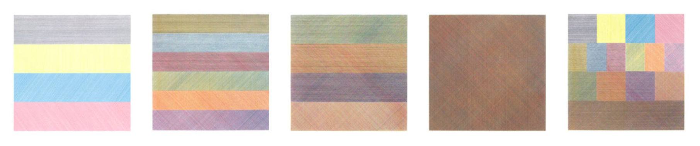
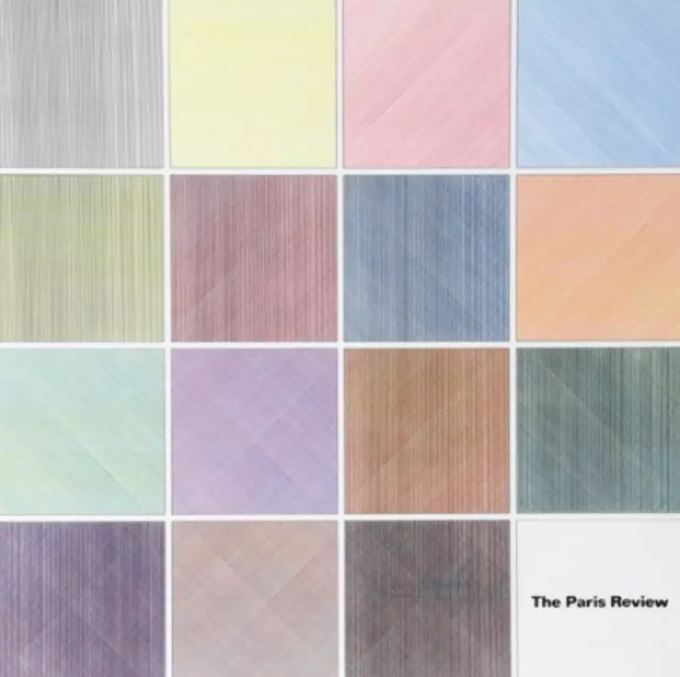

Sol LeWitt
I'm really into the conceptual artist, Sol LeWitt.
I was never interested in art until around 2010, when I first discovered Sol LeWitt. I was visiting my Dad in Beacon, NY and had some time to kill. I decided to go to Dia Beacon, a modern art museum built in 2003 that transformed Beacon into a significant arts community. At the time they had a large exhibition of LeWitt’s Wall Drawings. I was blown away by scale of these massive works of art. For example, Wall Drawing #1211 is 192 drawings laid out in a 4 x 48 grid, each one a square meter in size, so this one work of art is around 5 meters tall and 50 meters wide (allowing for white space on the borders)! Something about the algorithmic, non-arbitrary design of all the pieces spoke to me. Afterward, I started researching LeWitt and learned that he had just passed away in 2007. And I learned about conceptual art, a movement LeWitt helped popularize in the 1960s.
One key aspect of conceptual art is that the idea behind the artwork is primary and that the execution of the artwork is perfunctory. As an example, the Wall Drawings at Dia Beacon that I referred to earlier, were executed by two teams of assistants under LeWitts direction, but LeWitt did not do any of the physical work himself. More interestingly, if you purchase a Sol LeWitt Wall Drawing ( it will cost you anywhere from $150K to $1M+ ), what you actually get is a Ceritificate of Authenticity and Diagram. This gives you the exclusive right to have the work installed by a master craftsman (sold separately) on any one wall that you own or have permission to install on. If you have it installed on your living room wall and then sell the piece to someone else, you need to uninstall it before the new owner installs it on the wall of their choosing.
MASS MoCA in North Adams, MA has one of the more incredible art exhibitions on the planet. They have 105 massive LeWitt Wall Drawings in a 27,000 sq ft building. Sol LeWitt: A Wall Drawing Retrospective was opened in 2008 and is scheduled to stay at MASS MoCA until the year 2043(!).
Composite Series (1970.01), Set of 5 silkscreens, Edition of 150, Sarah Lawrence Press.

All One, Two, Three, and Four Part Combinations of Lines in Four Directions and Four Colors, Each Within a Square (1983.10), Silkscreen, Edition of 100, The Paris Review.

Sol LeWitt Links
A p5.js sketch I made inspired by Lewitt's Paris Review and Composite Series works.
Click anywhere on the sketch and press the 'h' key to customize the parameters of the sketch.
Press 'h' again to go back to the canvas.